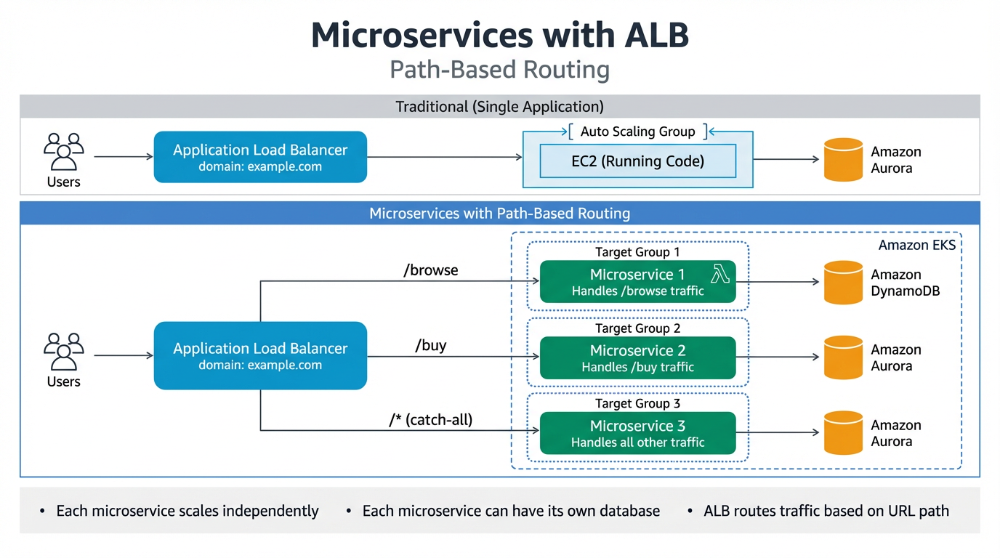

Microservice with ALB

Application Load Balancer (ALB) enables path-based routing to direct traffic to different microservices:
/browse→ Target Group 1 — handles traffic for browsing (e.g. cloudwithraj.com/browse)/buy→ Target Group 2 — handles traffic for purchases (e.g. cloudwithraj.com/buy)/*(catch all) → Target Group 3 — handles all other traffic
Each microservice can have its own compute (EC2 with Auto Scaling Group or Lambda), and its own database (Amazon Aurora, DynamoDB, etc.). The ALB sits behind a domain (e.g. cloudwithraj.com) and routes requests to the appropriate target group based on the URL path. This allows each microservice to scale independently using an Auto Scaling Group behind Amazon EKS.